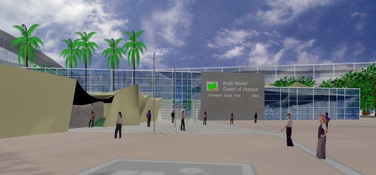

Strategic advisory and green economy
We provide end-to-end consulting and development economics, aligning vision with market feasibility, investment strategy and regenerative economic models.
Good plans need an answer to who will pay for them, who will build them and who will run them. PUD advises authorities and investors on feasibility, steering committees, consultant selection, public-private partnerships and policy alignment.
Recent advisory roles include steering-committee advisory for Kidana at the holy sites of Makkah, advisory on Phases 2 to 4 of the New Administrative Capital for ACUD, and a subject-matter-expert group for the Sumou Boulevard development in New Cairo.
What this covers
- Strategic advisory and steering committees
- Feasibility and development economics
- Consultant selection support
- Public-private partnerships and policy
- Design management and client representation
- Capacity building
Selected projects
 Sumou Boulevard, New CairoMostakbal City, New Cairo · 20262024Kidana Al Khaif (Mina, Muzdalifah and Arafat)Makkah (Mina, Muzdalifah, Arafat) · 2024-2026
Sumou Boulevard, New CairoMostakbal City, New Cairo · 20262024Kidana Al Khaif (Mina, Muzdalifah and Arafat)Makkah (Mina, Muzdalifah, Arafat) · 2024-2026 Cairo Media CityGiza · 2026
Cairo Media CityGiza · 2026 Jorhum DestinationMakkah · 2026
Jorhum DestinationMakkah · 2026 New Administrative Capital: Strategic Advisory, Phases 2 to 4New Administrative Capital · 2025
New Administrative Capital: Strategic Advisory, Phases 2 to 4New Administrative Capital · 2025 Strategic Plan for the Optimisation of Saudi Railway Organization's Land and Property AssetsSaudi Arabia · 2017-2018
Strategic Plan for the Optimisation of Saudi Railway Organization's Land and Property AssetsSaudi Arabia · 2017-2018 Branding Manual and Technical Specifications for the Commercial Registry and Notary OfficesEgypt · 2016
Branding Manual and Technical Specifications for the Commercial Registry and Notary OfficesEgypt · 2016 Private Waterfront Property in HurghadaHurghada · 2011
Private Waterfront Property in HurghadaHurghada · 2011
Arab World Participation Galleries, Frankfurt Book FairFrankfurt · 20042026Muzdalifah ParkMuzdalifah, Makkah · 20262025Majar Al Kabsh Pre-Concept DesignMina, Makkah · 20252025Yanbu, Umluj, Al Wajh and Duba Sub-Regional Plan (YUWDDA)Yanbu, Umluj, Al Wajh and Duba (Red Sea coast) · 202521 projects. Where we apply it:
Questions people ask
What advisory services does PUD offer?
PUD advises on strategy, feasibility and economics, steering committees, consultant selection, public-private partnerships and design management for large development programmes.